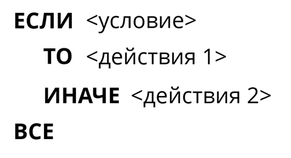
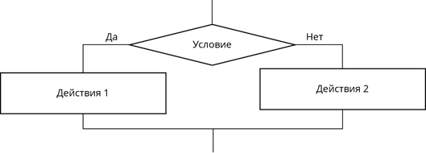
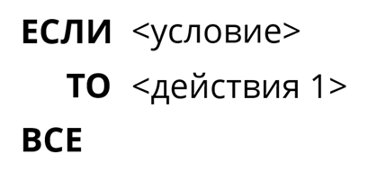
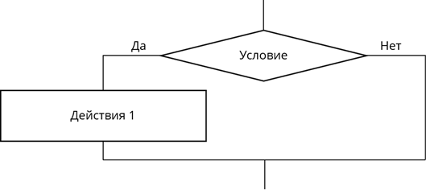
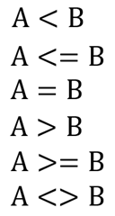
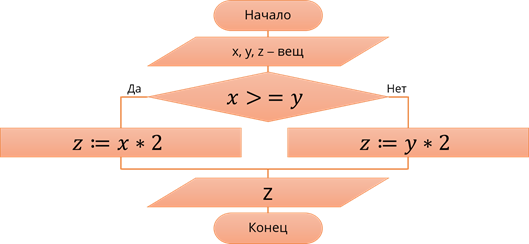
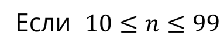
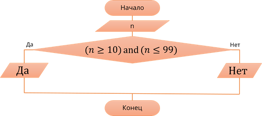
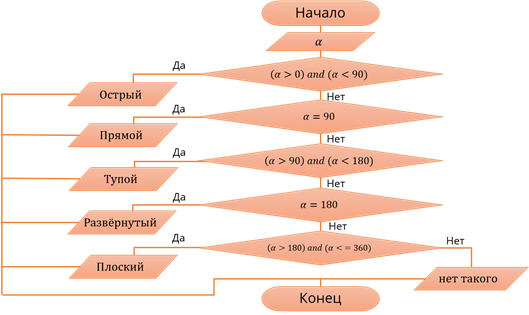

Алгоритмические конструкции ветвление и неполные алгоритмические конструкции ветвление
В повседневной жизни таких ситуаций, в которых заранее известен алгоритм действий и результат, очень мало. Практически постоянно нам приходится принимать решения от которых будут зависеть дальнейшие действия.
Ветвление – это алгоритмическая конструкция, в которой в зависимости от выполнения условия (да или нет) предусмотрен выбор одной из двух последовательностей команд (ветвей).
А алгоритмы в которых применяется только «ветвление», называются разветвляющимися.
Рассмотрим пример. На уроке русского языка для того чтобы применить правило правописания приставок на "з-" и "с-" вы будете действовать по алгоритму:
алг правописание приставок на з- и с-
нач
если приставка перед звонкими согласными
то писать З
иначе писать С
кон
Для принятия решения ход рассуждений может быть таким:
Полная форма ветвления:
Графически, полная форма структуры ветвление представляется следующим образом:
Как вы помните Проверка условия изображается с помощью блока «Принятие решения», который условно обозначается ромбом, внутри его записывается условие.
В данный блок входит одна линяя связи, а выходят две линии, возле которых записываются результаты проверки условия да или нет. Далее, в зависимости от выполнения или невыполнения некоторого условия приводится к исполнению либо одна, либо другая последовательность команд.
Иногда, встречаются ситуации, когда вторая последовательность команд отсутствует, то есть сокращённая форма записи.
Графически, неполная форма структуры ветвление представляется следующим образом:
Изображаем блок «Принятие решения», который условно обозначается ромбом, внутри его записывается условие.
В данный блок входит одна линяя связи, а выходят две линии, возле которых записываются результаты проверки условия да или нет. Здесь, в зависимости от выполнения или невыполнения некоторого условия приводится к исполнению только одна последовательность команд, либо алгоритм будет завершён.
Операции сравнения на алгоритмическом языке можно записать при помощи следующих знаков: меньше; меньше или равно; равно; больше; больше или равно; не равно.
С помощью этих знаков можно сравнивать любые переменные, числа и арифметические выражения, символьные переменные.
Рассмотрим блок-схему алгоритма, по которому большее число из двух будет удвоено.
Обратите внимание на второй блок данной блок-схемы. Здесь записаны имена и типы величин (данных), которые обрабатываются в алгоритме.
В данном примере, в условии, используется одна операция сравнения. Такие условия называются простыми.
То есть простыми называются условия, состоящие из одной операции сравнения.
При решении различных задач иногда возникает необходимость проверять выполнение двух (как например, 0 < а < 5) и более условий. Такие условия называют составными.
Составные условия – это условия которые создаются из нескольких простых, соединённых друг с другом логическими операциями. Для записи составных условий в алгоритмическом языке используют следующие логические операции: логическое «и» and ; логическое «или» or ; логическое отрицание not.
Так с помощью логических операций простые условия объединяют в составные. Простые условия при этом обязательно заключаются в скобки, так как логические операции имеют более высокий приоритет, чем операции сравнения.
Составное условие, состоящее из двух простых условий, соединённых операцией И, верно (истинно) только тогда, когда верны оба простых условия.
Составное условие, состоящее из двух простых условий, соединённых операцией ИЛИ, верно тогда, когда верно хотя бы одно из простых условий. Составное условие НЕ верно только тогда, когда простое условие ложно.
Рассмотрим пример: Необходимо с помощью блок-схемы изобразить алгоритм, определяющий, является ли данное число двузначным.
Математически, необходимо выполнить сравнение данного числа с числами десять и девяносто девять.
Если данное число n больше либо равно 10 и меньше, либо равно 99, то можно сделать вывод, что данное число двухзначное.
Однако при решении задач часто приходится выбирать не из двух, а из трёх и более вариантов. Существуют разные способы построения соответствующих алгоритмов. Один из них — составить комбинацию из нескольких ветвлений.
Рассмотрим пример: Задан угол. необходимо определить его вид: острый, прямой, тупой, развёрнутый или плоский. Представим решение данной задачи в виде блок-схемы.
Подведём итоги
Ветвление – это алгоритмическая конструкция, в которой в зависимости от выполнения условия (да или нет) предусмотрен выбор одной из двух последовательностей команд (ветвей).
А алгоритмы в которых применяется только «ветвление», называются разветвляющимися .